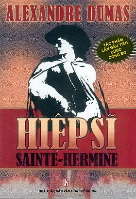

Năm 2005, một cơn sốt dâng lên tại Pháp và trên toàn thế giới như ở các nước Mỹ, Trung Quốc, Nga về sự xuất hiện của bộ tiểu thuyết cuối cùng của Alexandre Dumas với 1230 trang, 118 chương: Hiệp sĩ Sainte-Hermine (Tên nguyên tác là Le chevalier de Saite-Hermine). Cuốn sách đã được lãng quên trong thư viện quốc gia Pháp suốt 135 năm trước khi được đưa ra với công chúng.
Hiệp sĩ Sainte-Hermine lần đầu được đăng nhiều kỳ trên một tờ báo của Pháp nhưng vẫn chưa hoàn tất khi Dumas mất năm 1870. Ông Claude Schoppe, một chuyên gia chuyên nghiên cứu về Alexandre Dumas đã phát hiện ra cuốn sách và ông đã viết thêm ba chương cuối để hoàn tất tác phẩm.
Khi xuất hiện trước công chúng, cuốn sách được đánh giá là "hay đến mức không thể tả nổi". Sở dĩ cuốn sách hấp dẫn như vậy là một phần nhờ vào nguồn tư liệu dồi dào về lịch sử mà Dumas đã dày công sưu tầm.
Trên bối cảnh của cuộc cách mạng Pháp, cuốn tiểu thuyết đề cập đến sự lựa chọn đầy khó khăn của một nhà quí tộc giữa tư tưởng bảo hoàng và sự ngưỡng mộ cá nhân đối với Napoléon.